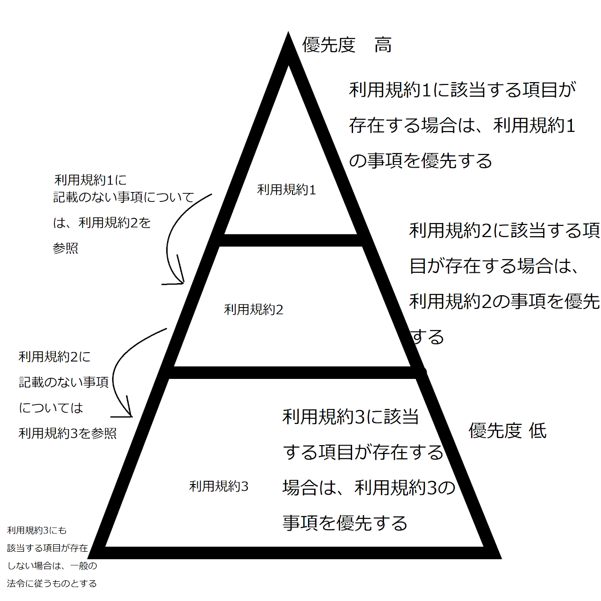

利用規約についての説明
3つの利用規約についての関係を図に示してみました。こちらの図と下記文章を参照した上で利用規約1からお読み下さい。
追記:3つの利用規約間で矛盾する項目が含まれている場合は、利用規約番号が早いものに記載された事項を優先します。
利用規約1(2024/12/23更新)
こちらでは大まかな利用条件を出来るだけ分かりやすい言葉で示しています。
前提条件
横茶横葉はこのサイトを利用したり、サイトにあるコンテンツをダウンロード又は使用した際に発生した全ての事象について一切責任を負わないものとする。発生した全ての問題はサイト管理者である横茶横葉を除いた当事者間のみで解決することとします。(ユーザーは、自己責任で利用する。)
サービスを予告なしに終了することがあります。
サイトを突然閉めることがあります。
利用規約を突然変更することがあります。
利用規約の適用は上記の図の通りとします。
OKなこと
利用規約を守った上でのコンテンツ利用
URLリンクシェア
プログラムの不具合報告
ダウンロードしたコンテンツの知人間での共有(例:友達にダウンロードしたapkファイルそのものをコピーして渡す)
一般常識に従った利用(この項目については、曖昧な表現であるため、他の利用規約をご覧ください。)
NGなこと
横茶横葉が製作し、"著作権フリー"や"フリー素材"、"自由に利用可能"、"ご自由にご利用ください"または"ご自由にご活用ください"と明記されていないものは、再配布を禁止します。特に、プログラムを勝手にほかの場所で公開することは許可されていない場合、禁止です。
特に改変が可能と明記されていないものは、改変を禁じます。(リバースエンジニアリング[利用規約2に明記されています]を含む)
インターネットアーカイブ(WayBackMachine等)には決して当サイトを勝手に保存しないでください。
"著作権フリー"や"フリー素材"と明記されているものであったとしても、悪意のあるプログラム(e.g.ウイルスソフトなど)の製作に使用することは一切許可しません。
再利用が許可されている場合でも、その成果物や派生作品そのものにおいて、明記がない限りは独占行為、横茶横葉のプログラムをそのまま、または改変して使用しているにもかかわらず全て自作したと主張すること、製作者またはその他ユーザー様の迷惑や自由を侵害する行為は一切許可しません。
上記の利用規約に、該当する項目が存在しない場合は、下記から利用規約2をご覧ください。
利用規約2
改訂日 2024/03/04 横茶横葉(編集者) 利用規約/Terms of use
当サイトからダウンロードしたコンテンツは、私的目的の範囲内でご利用下さい。また、当サイトからダウンロードしたプログラムご利用の際に発生した全ての事柄について、管理者、開発者は一切の責任を責任を負いかねますのでご注意下さい。横茶横葉が提供するコンテンツ(アプリケーションを含む)は、自己責任でご利用 いただきますようお願い致します。(例:インターネット接続の際に発生したインターネット接続料金 ファイルの破損 機器の故障 当サイトのアプリケーション利用 時に発生した金銭トラブル 等の横茶横葉が製作したファイルまたはプログラムの利用中に発生した全ての損失、損害)
ホームページで公開されているプログラムおよび創作物は明確な記載がない限り無断転載及び無断使用禁止です。また、本サイト以外から本サイトで公開されているアプリをダウンロードしないでください。
公開しているソフトウェアやアプリなどのプログラムの動作を完全に保証することは出来ません。当サイトからダウンロードしたファイルによる全ての問題は無保証です。
また当サイトのダウンロードサーバにはオンラインファイルストレージサービスを使用しています。ブラウザによりブロックされ、ダウンロードできない場合は、ダウンロード設定を変更してください。
このサイトで配布するプログラム、ウェブページの著作権は、全て横茶横葉に帰属し、一部のアセットデータはMikanが著作権を保有しています。"著作権フリー、ご自由にお使いください"と明記されている素材以外は無断での利用を一切禁止しております。当サイトにアップロードされているプログラム内にて作品を制作した場合で、サイトに著作権についての記載がない場合はその作品制作者に著作権が帰属します。
当サイトのソフトウェアは、基本的に再配布は禁止です。(改ざんされたファイルが流通しないようにするため)ただし、公式サイトへのWebリンクの掲載は可能です。
マルウェアについて
当サイト上でダウンロード可能なアプリやプログラムは、全てセキュリティスキャンをVirusTotalを用いて行っております。第三者によるサーバー内ファイルの不正アクセス、ソフトウェア改竄などが行われた際は、一切保証ができませんのでご注意ください。(不安な方はVirusTotalのDetailページにあるファイルのハッシュ値を参照することをお勧めします。)アンチウイルスソフトによるウイルス検出に対する保証は致しません。尚、当サイト側が悪意を持ってウイルスを混入させることは一切ございませんのでご安心ください。また、ファイルは必ず当サイトなど正規のダウンロードサイトからダウンロードして下さい。
プライバシー保護について
私(横茶横葉)は、プログラムを使ってくださる皆様のプライバシーを真剣に考えています。
2024年12月23日現在において、アナリティクスが実装されているサイトは以下の通りです。
・YouTube(YouTubeStudio)
・横茶横葉のサイト(アナリティクス)
これらのサイトやアプリではアクセス計測のための一般的な手法が採用されています。
YouTubeを除き、これらは品質向上のため、またはアクセス数測定のために、一時的に使用されます。
これに同意しない場合は、アナリティクスをブロック可能なブラウザーやブラウザー拡張機能を御利用下さい。
ご協力をお願い致します。
ソースコードについて
現在は、ソースコードについての取り扱いを明確に定めていないため、閲覧のみとさせて頂きます。
ただし、"再利用可能"と明記されているものや、横茶横葉Aライセンスまたは横茶横葉Bライセンス、またはその他の一般的なオープンソースライセンスが採用されているものに関しては条件に従った利用が可能です。
リバースエンジニアリングについて
当サイトの全てのプログラムはリバースエンジニアリングを製作者から明確に許可された人物以外は一切禁止としています。
ただし、ソースコードが公開されていて、再利用可能である場合(ソースコードについて セクションを参照)ではこの限りではありません。
この利用規約は予告なしに変更になることがあります。
最後までお読み頂き、ありがとうございました!!少しでも皆様のお役に立てるように様々な創作活動を進めてまいります!
利用規約3は下記をご覧ください。
詳細な利用規約(利用規約3) 改定日2025/01/15
利用規約
この利用規約（以下，「本規約」といいます。）は，横茶横葉のサイト及びその他の横茶横葉が管理するサイト（以下，「当サイト」といいます。）がウェブサイト上で提供するサービス（以下，「本サービス」といいます。）の利用条件を定めるものです。利用者の皆さま（以下，「ユーザー」といいます。）には，本規約に 従って，本サービスをご利用いただきます。
第1条（適用）
1. 本規約は，ユーザーと当サイトとの間の本サービスの利用に関わる一切の関係に適用されるものとします。
2. 当サイトは本サービスに関し，本規約のほか，ご利用にあたってのルール等，各種の定め（以下，「個別規定」といいます。）をすることがあります。これ ら個別規定はその名称のいかんに関わらず，本規約の一部を構成するものとします。
3. 本規約の規定が前条の個別規定の規定と矛盾する場合には，個別規定において特段の定めなき限り，個別規定の規定が優先されるものとします。
第2条（公開されるプログラム）
4. ユーザーは、"はじめにお読み下さい"に記載のある事項に従ったうえで当サイトに公開されているプログラムをご利用いただきます。
5. ユーザーは、いかなる場合にも、自己責任でプログラムを利用するものとし、当サイトは発生した一切の問題について責任を負わないものとします。
第3条（利用規約の変更）
6. ユーザーは，利用規約が変更になった場合は、いかなる場合においても、新規に改訂された利用規約に従うものとします。
7. 当サイトは、予告することなく利用規約を変更することができます。
8. 利用規約に違反した場合は、当サイト及び当サイトのコンテンツの利用を一切禁止とします。
第4条（利用料金および支払方法）
9. 当サイトでは、利用料金を原則として一切請求しません。
10. ユーザーが利用料金の支払を請求された場合は専門の機関にご相談下さい。当サイトは原則として一切利用料金を請求しません。またいかなる問題に対しても当サイトは、一切の責任を負いかねます。
第5条（禁止事項）
ユーザーは，本サービスの利用にあたり，以下の行為をしてはなりません。
11. 法令または公序良俗に違反する行為
12. 犯罪行為に関連する行為
13. 本サービスの内容等，本サービスに含まれる著作権，商標権ほか知的財産権を侵害する行為
14. 当サイト，ほかのユーザー，またはその他第三者のサーバーまたはネットワークの機能を破壊したり，妨害したりする行為
15. 本サービスによって得られた情報を商業的に利用する行為
16. 当サイトのサービスの運営を妨害するおそれのある行為
17. 不正アクセスをし，またはこれを試みる行為
18. 他のユーザーに関する個人情報等を収集または蓄積する行為
19. 不正な目的を持って本サービスを利用する行為
20. 本サービスの他のユーザーまたはその他の第三者に不利益，損害，不快感を与える行為
21. 他のユーザーに成りすます行為
22. 当サイトが許諾しない本サービス上での宣伝，広告，勧誘，または営業行為
23. 面識のない異性との出会いを目的とした行為
24. 当サイトのサービスに関連して，反社会的勢力に対して直接または間接に利益を供与する行為
25. その他，当サイトが不適切と判断する行為
第6条（本サービスの提供の停止等）
26. 当サイトは、ユーザーに事前に通知することなく本サービスの全部または一部の提供を停止または中断することができるものとします。
27. 当サイトは，本サービスの提供の停止または中断により，ユーザーまたは第三者が被ったいかなる不利益または損害についても，一切の責任を負わないもの とします。
第7条（利用制限および登録抹消）
28. 当サイトは，ユーザーが以下のいずれかに該当する場合には，事前の通知なく，ユーザーに対して，本サービスの全部もしくは一部の利用を制限し，または ユーザーとしての登録(横茶横葉の提供する他のプラットフォームでの登録)を抹消することができるものとします。
a. 本規約のいずれかの条項に違反した場合
b. 登録事項に虚偽の事実があることが判明した場合
c. 料金等の支払債務の不履行があった場合
d. 当サイトからの連絡に対し，一定期間返答がない場合
e. 本サービスについて，最終の利用から一定期間利用がない場合
f. その他，当サイトが本サービスの利用を適当でないと判断した場合
29. 当サイトは，本条に基づき当サイトが行った行為によりユーザーに生じた損害について，一切の責任を負いません。
第8条（連絡）
ユーザーは、横茶横葉のSNSアカウント等を通じて製作者に連絡することが出来ます。
第9条（保証の否認および免責事項）
30. 当サイトは，本サービスに事実上または法律上の瑕疵（安全性，信頼性，正確性，完全性，有効性，特定の目的への適合性，セキュリティなどに関する欠陥 ，エラーやバグ，権利侵害などを含みます。）がないことを明示的にも黙示的にも保証しておりません。
31. 当サイトは，本サービスに起因してユーザーに生じたあらゆる損害について一切の責任を負いません。ただし，本サービスに関する当サイトとユーザーとの 間の契約（本規約を含みます。）が消費者契約法に定める消費者契約となる場合，この免責規定は適用されません。
32. 前項ただし書に定める場合であっても，当サイトは，当サイトの過失（重過失を除きます。）による債務不履行または不法行為によりユーザーに生じた損害 のうち特別な事情から生じた損害（当サイトまたはユーザーが損害発生につき予見し，または予見し得た場合を含みます。）について一切の責任を負いません。また ，当サイトの過失（重過失を除きます。）による債務不履行または不法行為によりユーザーに生じた損害の賠償は，ユーザーから当該損害が発生した月に受領した利 用料の額を上限とします。
33. 当サイトは，本サービスに関して，ユーザーと他のユーザーまたは第三者との間において生じた取引，連絡または紛争等について一切責任を負いません。
第10条（サービス内容の変更等）
当サイトは，ユーザーに通知することなく，本サービスの内容を変更しまたは本サービスの提供を中止することができるものとし，これによってユーザーに生じた損害について一切の責任を負いません。
第11条（利用規約の変更）
当サイトは，必要と判断した場合には，ユーザーに通知することなくいつでも本規約を変更することができるものとします。なお，本規約の変更後，本サービスの利用を開始した場合には，当該ユーザーは変更後の規約に同意したものとみなします。
第12条（個人情報の取扱い）
当サイトは，本サービスの利用によって取得する個人情報については，当サイト「プライバシーポリシー」に従い適切に取り扱うものとします。
第13条（通知または連絡）
ユーザーと当サイトとの間の通知または連絡は，当サイトの定める方法によって行うものとします。当サイトは,ユーザーから,当サイトが別途定める方式に従った変更届け出がない限り,現在登録されている連絡先が有効なものとみなして当該連絡先へ通知または連絡を行い,これらは,発信時にユーザーへ到達したものとみなします。
第14条（権利義務の譲渡の禁止）
ユーザーは，当サイトの書面による事前の承諾なく，利用契約上の地位または本規約に基づく権利もしくは義務を第三者に譲渡し，または担保に供することはできません。
第15条（準拠法・裁判管轄）
34. 本規約の解釈にあたっては，日本法を準拠法とします。
35. 本サービスに関して紛争が生じた場合には，当サイトの本店所在地を管轄する裁判所を専属的合意管轄とします。
以上
何かご不明な点等ございましたらぜひお気軽に横茶横葉のSNSアカウントやメールからご相談ください!
参考にさせていただいたサイト様
https://smartdoc.jiinet.co.jp/305/#26ありがとうございます!